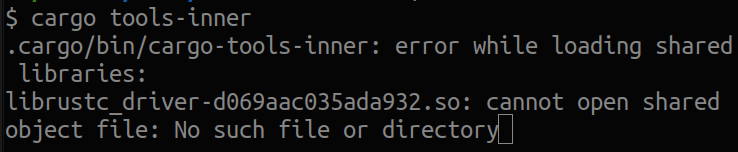

Writing your own Rust linter
by Guillaume Gomez
Who am I?
Rust language reviewer and contributor. Member of:- rustdoc team (team leader)
- docs.rs team
- dev-tools team
I am an engineer at Huawei.
Declaring a lint

Implementing a lint

main.rs

Running our linter

Running our linter


Wrapping the wrapper

Blog post version
blog.guillaume-gomez.fr/articles/2024-01-18+Writing+your+own+Rust+linter
Thank you for listening!
More Rust things on< blog.guillaume-gomez.fr >
< guillaume1.gomez@gmail.com >
 @GuillaumeGomez
@GuillaumeGomez
 @imperioworld_
@imperioworld_
@imperio@toot.cat